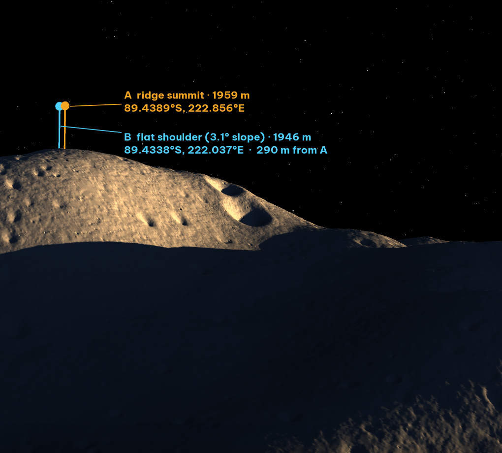
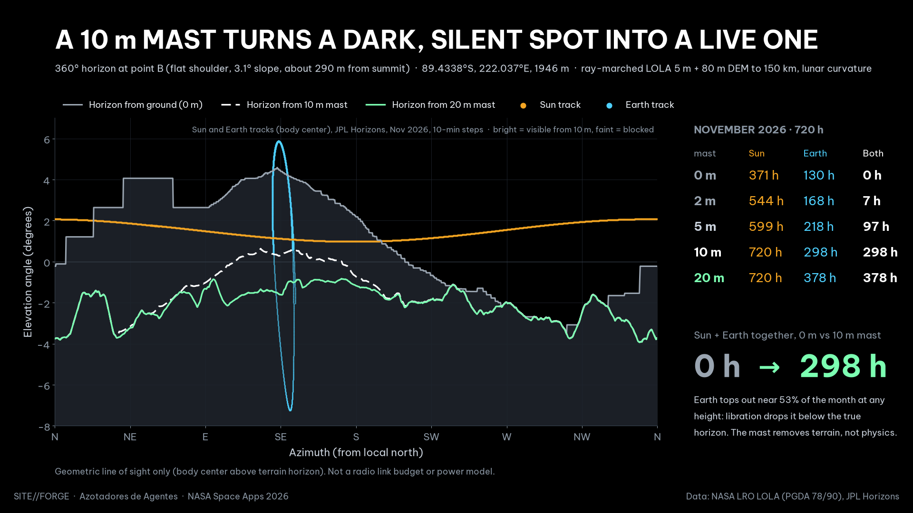

NASA Space Apps Challenge 2026 · Lunar Landing Site Navigator
SITE//FORGE
Don't find the perfect landing site. Engineer one.
Team Azotadores de Agentes Buenos Aires local judging

Real NASA LOLA 5 m/px terrain (PGDA Site01), lit by the JPL Horizons Sun on 1 Nov 2026, 10:00 UTC. 2× vertical exaggeration; marker poles not to scale. Markers A and B are independent cross-check points — not the app’s Ridge A.
The challenge
At the lunar south pole, the Sun and Earth sit low — a distant ridge can block both.
The ask
Compare south-pole sites & dates
See Sun and Earth against the local horizon.
The pain
Dates slip. Decisions reopen.
Today that means starting over across specialist tools — QuickMap, Moon Trek, Horizons.
Our question
What is the minimum mast that improves the site?
A decision, not just a chart.
SITE//FORGERelevance · Impact02 / 07
How it works · computed from NASA data
From terrain to a decision.
01
LOLA DEMs
5 m/px Site01 Connecting Ridge + regional 80 m/px out to 150 km
→
02
Ray-march horizon
360°, with lunar curvature, at mast heights 0–20 m
→
03
JPL Horizons
Sun & Earth az/el, 1 Nov–1 Dec 2026 (720 h)
→
04
Windows
Visible when elevation clears the horizon. Outages, overlaps.
→
05
Optimizer
Discrete search over 130 mast configurations
→
06
Static 3D app
Precomputed output. No live API needed.
ENGINE Python · NumPy · rasterioDATA PGDA 78 · PGDA 90 · JPL HorizonsVISIBILITY geometric line of sight only, not a link budget or power
SITE//FORGERelevance03 / 07
Hero result · Ridge A, Connecting Ridge · 1 Nov–1 Dec 2026 · 720 h
A mast changes the horizon. Up to a point.
Modeled Earth visibility · Ridge A
199 → 382 h
Surface to a 10 m mast. 20 m adds nothing. The 5 m mast already reaches 359.5 h.
Sun: 426 h (59.2%) at 0 m, then 100% from 5 m — the mast clears the local horizon in this window.
Longest joint Sun+Earth outage: 465 h at 0 m · 391 h at 2 m · 342.5 h at 5 m · 320 h at 10 m and 20 m. Simultaneous at 0 m: 54 h.
Geometric line of sight only — not a link budget or power. Earth caps near 53% of the month due to libration.
SITE//FORGEValidity · live app engine04 / 07
Minimum-infrastructure optimizer · Ridge A search
Not the tallest tower. The smallest one that meets the constraint.
Searched
130
candidate configurations
Feasible
17
under a 360-hour outage limit
Recommended
5 m
mast at Ridge A — 359.5 h Earth
Meets the limit
5 m mast · 359.5 h Earth
Joint outage 342.5 h, under the 360 h limit. Sun already 100% in this window. Lowest-cost feasible configuration.
Maximizes visibility
10 m mast · 382 h
Most Earth visibility at Ridge A — and 20 m adds nothing more (320 h joint outage at both heights).
SITE//FORGECreativity05 / 07
Independent cross-check · Point B is not Ridge A

Point B, a flat shoulder 290 m from the summit, chosen to show mast effect — a different point from the app’s Ridge A. Joint Sun+Earth visibility: 0 h at the surface → 297.5 h at 10 m (the figure rounds this to 298 h). Geometric line of sight only; Earth caps near 53% of the month due to libration.
✓ 35 tests pass✓ validation_report.md✓ IM-2 outside Site01 — not used✓ No fabricated numbers
SITE//FORGEValidity06 / 07
SITE//FORGE · Azotadores de Agentes
A real NASA site. A real limit.
A mast that changes the horizon.
The minimum infrastructure — and where more height stops helping.
Point B timeline — not Ridge A. Same spot, same month, one mast. Joint Sun+Earth visibility from 0 h to 297.5 h at 10 m (298 h on the figure, rounded). Geometric line of sight only.